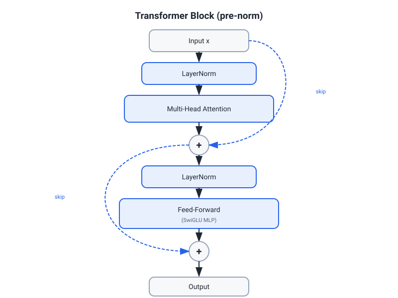
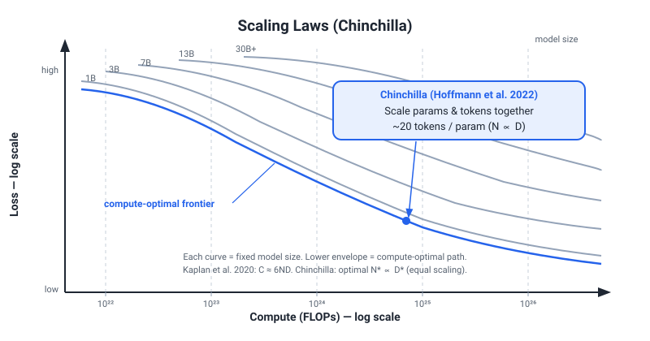
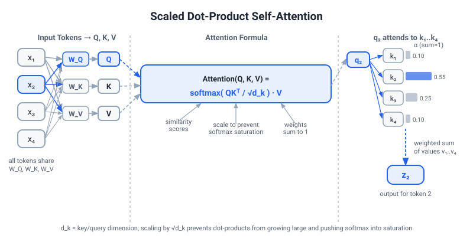

ML / LLM / NLP Fundamentals — Know-Cold Study Guide
Priority / how to use: This is your rapid-fire flashcard reference for Stage 1 with Yannick Versley. Each card has a crisp mechanism plus the one-liner you would actually say aloud. Work through once at reading speed; then drill the headers you hesitate on. Versley will probe from classical NLP / comp-ling foundations all the way to 2026 LLM internals — know every section.
PART 1 — PROBABILITY AND STATISTICS
1.1 Bayes' Theorem
Mechanism:
P(H | D) = P(D | H) · P(H) / P(D)
P(H)= prior;P(D | H)= likelihood;P(D)= marginal (evidence);P(H | D)= posterior.P(D)= Σ P(D | Hᵢ) P(Hᵢ)` — sum over all hypotheses (law of total probability).
One-liner: "Posterior is proportional to likelihood times prior; we update our belief about a hypothesis once we see data."
Concrete example: Spam filter. Prior P(spam)=0.2; P("free" | spam)=0.9; P("free" | not spam)=0.05. After seeing "free": P(spam|"free") = 0.9×0.2 / (0.9×0.2 + 0.05×0.8) ≈ 0.82.
1.2 MLE vs MAP
| MLE | MAP | |
|---|---|---|
| Objective | Maximize P(D | θ) |
Maximize P(θ | D) ∝ P(D|θ)·P(θ) |
| Prior | Ignored (uniform) | Explicit prior on θ |
| Regularization | None | L2 prior → L2 reg; L1 prior → L1 reg |
| Overfitting | Prone with small data | Reduced via prior |
Key identity: MAP with Gaussian prior on θ = MLE + L2 regularization (λ||θ||²). MAP with Laplace prior = MLE + L1 regularization.
One-liner: "MLE finds parameters that make the data most probable; MAP multiplies by a prior, equivalent to regularization."
1.3 Common Distributions (cheat-sheet)
| Distribution | PMF/PDF | Mean | Variance | Use case |
|---|---|---|---|---|
| Bernoulli(p) | p^x (1-p)^(1-x) | p | p(1-p) | Single binary trial |
| Binomial(n,p) | C(n,k) p^k (1-p)^(n-k) | np | np(1-p) | k successes in n trials |
| Poisson(λ) | λ^k e^{-λ} / k! | λ | λ | Count events in fixed time |
| Gaussian(μ,σ²) | (1/√2πσ²) exp(-(x-μ)²/2σ²) | μ | σ² | Real-valued; CLT limit |
| Exponential(λ) | λe^{-λx} | 1/λ | 1/λ² | Time between Poisson events |
| Beta(α,β) | x^{α-1}(1-x)^{β-1}/B(α,β) | α/(α+β) | — | Prior on probabilities |
| Dirichlet(α) | Multivariate Beta | αᵢ/Σαⱼ | — | Prior on categorical distributions |
Key property to know: Poisson is limit of Binomial as n→∞, p→0, np=λ. Used in eBay: modeling purchase events per session.
1.4 Expectation and Variance
E[X] = Σ xᵢ P(xᵢ) (discrete)
= ∫ x f(x) dx (continuous)
Var(X) = E[(X - E[X])²] = E[X²] - (E[X])²
E[aX + bY] = aE[X] + bE[Y] (linearity, always)
Var(aX + bY) = a²Var(X) + b²Var(Y) + 2ab·Cov(X,Y)
Covariance and correlation:
Cov(X,Y) = E[XY] - E[X]E[Y]
Corr(X,Y) = Cov(X,Y) / (σ_X · σ_Y) ∈ [-1, 1]
Independent → Cov=0, but not the reverse (Cov=0 does not imply independence).
1.5 Central Limit Theorem (CLT)
Statement: For i.i.d. variables X₁,...,Xₙ with mean μ and finite variance σ², the sample mean X̄ₙ converges in distribution to N(μ, σ²/n) as n→∞.
Practical import: Justifies using Gaussian approximations for error distributions, confidence intervals, and A/B test statistics regardless of original distribution shape, as long as n is large enough (rule of thumb: n ≥ 30).
One-liner: "CLT says sample means become Gaussian as n grows, which is why we can do normal-theory hypothesis tests on non-normal data."
1.6 Hypothesis Testing
Setup: - H₀ (null): no effect / status quo. - H₁ (alternative): the effect we want to detect. - Test statistic T: function of data with known distribution under H₀. - p-value: P(T ≥ t_observed | H₀). If p < α (usually 0.05), reject H₀.
Type I error (α): False positive — reject H₀ when true. Type II error (β): False negative — fail to reject H₀ when false. Power = 1 - β: Probability of detecting a true effect.
Common tests: | Test | When | Statistic | |---|---|---| | z-test | Known σ, large n | (X̄ - μ₀) / (σ/√n) | | t-test | Unknown σ, small n | (X̄ - μ₀) / (s/√n); t distribution | | Chi-squared | Categorical, independence | Σ(O-E)²/E | | Mann-Whitney U | Non-parametric, two groups | Rank-based |
A/B testing at eBay: Two-tailed t-test or z-test on conversion rate differences. Watch out for multiple comparisons (Bonferroni correction), peeking (inflate type I error), and network effects (SUTVA violation if users interact).
1.7 Information Theory Essentials
Entropy: H(X) = -Σ p(x) log p(x) — average uncertainty. Maximum at uniform distribution.
Cross-entropy: H(p, q) = -Σ p(x) log q(x) — cost of encoding p using code optimized for q. Used as training loss in classification.
KL-divergence: KL(p || q) = Σ p(x) log(p(x)/q(x)) — not symmetric; measures information lost using q instead of p. Always ≥ 0 (Gibbs inequality). Used in VAEs, DPO, RLHF KL penalties.
Cross-entropy loss = negative log-likelihood for classification = KL(true || model) + constant.
PART 2 — LINEAR ALGEBRA FOR ML
2.1 Eigendecomposition
For square symmetric matrix A: A = Q Λ Qᵀ where Q = orthogonal eigenvectors (columns), Λ = diagonal eigenvalues.
Why it matters: - Eigenvalues encode the scaling in each principal direction. - Covariance matrix is symmetric PSD; eigenvectors = principal components; eigenvalues = variance captured. - Kernel matrices, Hessians, attention gram matrices are all analyzed via eigendecomposition.
One-liner: "Eigendecomposition reveals the intrinsic directions and scales of a linear transformation; for covariance matrices, it gives you PCA directly."
2.2 SVD (Singular Value Decomposition)
Any m×n matrix A: A = U Σ Vᵀ
- U: m×m orthogonal (left singular vectors)
- Σ: m×n diagonal with σ₁ ≥ σ₂ ≥ ... ≥ 0 (singular values)
- V: n×n orthogonal (right singular vectors)
Truncated SVD (rank-r approximation): Keep top r singular values → best rank-r approximation in Frobenius norm (Eckart-Young theorem). Enables dimensionality reduction, latent semantic analysis, recommender systems (matrix factorization).
Connection to eigendecomposition: AᵀA = V Σ² Vᵀ; AAᵀ = U Σ² Uᵀ. Singular values = square roots of eigenvalues of AᵀA.
Relevance to LLMs: LoRA is low-rank decomposition of weight updates — ΔW = BA where B,A are thin matrices. This is exactly the spirit of truncated SVD: the weight update lives in a low-rank subspace, capturing the most important direction of change.
2.3 Matrix Operations for ML
Dot product / projection: a·b = ||a||·||b||·cos θ. Cosine similarity = dot product of unit vectors. Central to attention (QKᵀ / √d), nearest-neighbor search, CLIP embeddings.
Gradient chain rule (matrix form): If L = f(Wx), then dL/dW = (dL/dy) xᵀ where y=Wx. Shapes must be consistent: if W is (m×n), dL/dW is (m×n).
Trace: tr(A) = Σ Aᵢᵢ = sum of eigenvalues. Appears in nuclear norm regularization, Hutchinson trace estimator for Fisher information.
PART 3 — CLASSICAL ML ALGORITHMS
3.1 Linear Regression
Model: ŷ = Xθ, minimize MSE = (1/n)||y - Xθ||².
Closed-form (OLS): θ = (XᵀX)⁻¹Xᵀy. Requires XᵀX invertible (n > d, no multicollinearity).
Assumptions (Gauss-Markov): Linearity, exogeneity (E[ε|X]=0), no multicollinearity, homoscedasticity, no autocorrelation. When violated → use robust regression, ridge, or non-linear models.
Ridge (L2): θ = (XᵀX + λI)⁻¹Xᵀy. Adds λ to diagonal → always invertible. Shrinks coefficients proportionally.
Lasso (L1): No closed form; use coordinate descent. Sparsity-inducing; some coefficients go exactly to zero → implicit feature selection.
When to use: Baseline for any regression task; interpretable; fast. Fails when relationship is nonlinear, when interactions dominate, or d >> n (use regularization).
3.2 Logistic Regression
Model: P(y=1|x) = σ(wᵀx + b) where σ(z) = 1/(1+e⁻ᶻ).
Loss: Binary cross-entropy = -[y log p + (1-y) log(1-p)]. No closed form; optimized with gradient descent or LBFGS.
Decision boundary: wᵀx + b = 0 — linear in feature space. Extend to nonlinear via feature engineering or kernel trick.
Multiclass: Softmax regression: P(y=k|x) = exp(wₖᵀx) / Σⱼ exp(wⱼᵀx).
Assumptions: Linear decision boundary in feature space; independent observations; no severe multicollinearity.
Calibration: Logistic regression outputs are reasonably calibrated probabilities (unlike SVM scores). Critical for ranking and decision-making (eBay ads bidding).
One-liner: "Logistic regression models log-odds as a linear function of features; trained with MLE, outputs calibrated probabilities."
3.3 SVM and Kernels
Hard-margin SVM: Find hyperplane wᵀx + b = 0 maximizing margin = 2/||w||. Equivalent to minimizing ||w||²/2 subject to yᵢ(wᵀxᵢ + b) ≥ 1.
Soft-margin SVM: Allow hinge loss violations: minimize ||w||²/2 + C Σ max(0, 1 - yᵢ(wᵀxᵢ+b)). C controls regularization (low C = large margin, more violations; high C = tight margin, few violations).
Kernel trick: Replace xᵢᵀxⱼ with K(xᵢ, xⱼ) = φ(xᵢ)·φ(xⱼ) without computing φ explicitly. Enables nonlinear decision boundaries.
| Kernel | Formula | Use case |
|---|---|---|
| Linear | xᵢᵀxⱼ |
High-dimensional, text |
| RBF / Gaussian | exp(-γ||xᵢ-xⱼ||²) |
General nonlinear; needs tuning |
| Polynomial | (γxᵢᵀxⱼ + r)^d |
Interactions up to degree d |
| Sigmoid | tanh(γxᵢᵀxⱼ + r) |
Neural-net-like |
Mercer's theorem: K is a valid kernel iff it is symmetric and positive semi-definite (all eigenvalues ≥ 0).
Pros: Effective in high-dim text; margin principle is theoretically elegant; kernel trick = nonlinear flexibility. Cons: O(n²–n³) training; don't scale to modern dataset sizes; black-box with kernels.
One-liner: "SVM finds the maximum-margin hyperplane; kernels implicitly map to high-dimensional feature spaces without computing the mapping explicitly."
3.4 Decision Trees
Splitting criterion:
- Gini impurity: G = 1 - Σ pᵢ². Measures probability of misclassifying a randomly chosen element.
- Information gain (entropy): IG = H(parent) - Σ (nₖ/n)·H(child_k). Use log base 2 for bits.
- MSE reduction (regression): Var(parent) - Σ weighted Var(child).
Greedy construction: At each node, find best feature + threshold to maximize criterion. Grow until stopping condition (max depth, min samples, min gain).
Overfitting: Deep trees memorize training data. Mitigate: pruning (post-prune by validation error), max depth, min samples per leaf.
Pros: Interpretable, handles mixed types, no scaling needed. Cons: High variance, overfits, not smooth functions.
3.5 Random Forests
Bagging + feature randomization:
1. Draw n bootstrap samples from training data.
2. Grow a deep tree on each; at each split, sample √d (classification) or d/3 (regression) features randomly.
3. Aggregate: majority vote (classification), average (regression).
Why it works: Trees are high-variance/low-bias. Averaging reduces variance while keeping bias low. Feature randomization decorrelates trees (so averaging helps more).
Out-of-bag (OOB) error: ~37% of samples not in each bootstrap → natural validation set. OOB error ≈ held-out test error.
Feature importance: Mean impurity decrease across all trees for each feature. Use carefully (biased toward high-cardinality features).
Pros: Robust, low hyperparameter sensitivity, parallelizable, handles missing data. Cons: Not interpretable, slower than gradient boosting in many benchmarks.
3.6 Gradient Boosting and XGBoost
Gradient Boosting (Friedman): Sequential ensemble. At each step m:
1. Compute negative gradient of loss w.r.t. predictions: rᵢ = -∂L/∂F(xᵢ) (pseudo-residuals).
2. Fit a weak learner (usually depth-3 tree) to pseudo-residuals.
3. Update: F_m(x) = F_{m-1}(x) + η · h_m(x).
Learning rate η shrinks each tree's contribution → regularization. More trees needed but better generalization.
XGBoost improvements:
- Second-order Taylor expansion of loss (uses Hessian Hᵢ, not just gradient gᵢ).
- Regularized objective: Ω(f) = γT + (λ/2)Σwⱼ² (T=leaves, w=leaf weights).
- Column subsampling (like random forests, reduces variance).
- Sparse-aware: handles missing values natively (learns default direction).
- Cache-aware block structure for fast computation.
- Early stopping on validation metric.
Optimal leaf weight: wⱼ* = -Σgᵢ / (Σhᵢ + λ). Gain for a split: Gain = ½[G_L²/(H_L+λ) + G_R²/(H_R+λ) - G²/(H+λ)] - γ.
LightGBM: Leaf-wise growth (deepens the highest-gain leaf, not level-wise). Faster, better accuracy, more overfit risk at small data. Gradient-based one-side sampling (GOSS) and exclusive feature bundling (EFB) for speed.
CatBoost: Handles categorical features natively via ordered target encoding. Reduces leakage from standard target encoding.
When to use: Tabular data competitions (often best), structured datasets, mixed types. Still dominant for tabular despite deep learning. eBay recsys and ranking often use GBMs or neural rankers.
3.7 k-Nearest Neighbors (kNN)
Prediction: Classify/regress by majority vote or average of the k nearest training samples in feature space. Distance: Euclidean (L2), Manhattan (L1), cosine, Hamming (categorical).
Hyperparameter k: Low k = high variance, noisy; high k = high bias, smooth decision boundary. Optimal k via cross-validation.
Pros: No training time, trivially handles multi-class, nonparametric. Cons: O(n) inference, suffers curse of dimensionality (distances become uninformative in high-d), requires feature scaling.
Dimensionality: In d dimensions, fraction of space within radius r from a point → 0 as d→∞ for fixed r; or radius needed for fixed fraction → ∞. Nearest neighbor ceases to be "near."
Practical use: Retrieval / RAG vector search is kNN at scale (FAISS, Weaviate use ANN — approximate nearest neighbors via HNSW, IVF, or LSH).
3.8 k-Means Clustering
Algorithm (Lloyd's): 1. Initialize k centroids (random, k-means++). 2. Assign each point to nearest centroid. 3. Update each centroid to mean of its assigned points. 4. Repeat until convergence.
Objective (WCSS): Σₖ Σᵢ∈Cₖ ||xᵢ - μₖ||². Guaranteed to converge but to local minimum.
k-means++ initialization: Choose centroids sequentially; probability of choosing point x proportional to d(x, nearest existing centroid)². Reduces WCSS ≈ O(log k) vs random. Default in sklearn.
Choosing k: Elbow method (plot WCSS vs k, look for elbow); silhouette score; gap statistic.
Assumptions: Clusters are convex, roughly spherical, similar size. Fails on elongated, non-convex, very unequal clusters. Use DBSCAN or GMM for those.
One-liner: "k-Means iterates between assignment and centroid updates to minimize within-cluster sum of squares; converges to a local optimum, so run multiple times."
3.9 PCA (Principal Component Analysis)
Goal: Find directions of maximum variance in data.
Algorithm:
1. Center data: X̃ = X - μ.
2. Compute covariance matrix: C = X̃ᵀX̃ / (n-1).
3. Eigendecompose: C = QΛQᵀ.
4. Project: Z = X̃Q_r where Q_r = top r eigenvectors.
Equivalent via SVD: X̃ = UΣVᵀ; principal components = columns of V; scores = UΣ.
Variance explained: Var_k / Var_total = λₖ / Σλᵢ. Choose r so cumulative explained variance ≥ 85–95%.
Connection to dimensionality reduction: PCA is linear; for nonlinear structure use kernel PCA, t-SNE (visualization), UMAP (visualization + structure preservation).
Uses: Denoising, feature compression, visualization, removing multicollinearity before regression, whitening for training stability.
Limitations: Linear only; sensitive to scale (must standardize first); interpretability lost after rotation.
3.10 Naive Bayes
Model: P(y | x₁,...,xₙ) ∝ P(y) · Π P(xᵢ | y).
The "naive" assumption: Features are conditionally independent given the class. Almost never literally true, but often works well in practice.
Variants: | Variant | P(xᵢ | y) | Use | |---|---|---| | Gaussian NB | N(μ_{y,i}, σ²_{y,i}) | Continuous features | | Multinomial NB | Categorical/count | Text classification (word counts) | | Bernoulli NB | Bernoulli | Binary features (word presence) | | Complement NB | One-vs-rest | Imbalanced text |
Laplace smoothing: Add pseudocount α=1 to all counts → prevents zero probabilities for unseen words.
Pros: Extremely fast, works with small data, good spam baseline. Cons: Independence assumption violated for correlated features; poor calibration; can't model interactions.
PART 4 — METRICS
4.1 Classification Metrics
Confusion matrix:
Predicted Pos Predicted Neg
Actual Pos TP FN
Actual Neg FP TN
Core metrics:
Precision = TP / (TP + FP) — of predicted positives, how many are real?
Recall = TP / (TP + FN) — of actual positives, how many did we catch?
F1 = 2 · (P · R) / (P + R) — harmonic mean; good when P and R equally important
Fβ = (1+β²) · P · R / (β²P + R) — β>1 weights recall; β<1 weights precision
Accuracy = (TP + TN) / N — misleading for imbalanced classes
When to use what: Imbalanced classes (rare fraud, rare disease) → use F1 or PR-AUC, not accuracy. High-stakes false positive cost → weight precision. High-stakes false negative cost → weight recall.
4.2 ROC-AUC vs PR-AUC
ROC curve: Plot TPR (recall) vs FPR at every decision threshold. AUC = area under curve = probability that a random positive ranks above a random negative.
PR curve: Plot Precision vs Recall at every threshold. PR-AUC = area under PR curve.
When to prefer PR-AUC: Highly imbalanced classes. ROC-AUC remains high even when many false positives are generated (FPR stays low because TN is huge). PR-AUC directly measures quality of the positive predictions.
eBay example: Fraud detection (1% positive rate) → PR-AUC is more informative. General relevance ranking → NDCG (see 4.4).
One-liner: "ROC-AUC is optimistic when positives are rare; use PR-AUC to measure quality of your positive predictions on imbalanced problems."
4.3 Log-Loss and Calibration
Log-loss (binary cross-entropy):
Log-loss = -(1/n) Σ [yᵢ log(pᵢ) + (1-yᵢ) log(1-pᵢ)]
Heavily penalizes confident wrong predictions. Encourages well-calibrated probabilities.
Calibration: A model is calibrated if, among all instances where it predicts p=0.7, exactly 70% are positive.
- Reliability diagram (calibration curve): Plot mean predicted probability vs actual fraction of positives, binned. Perfect calibration = diagonal.
- Expected Calibration Error (ECE): Σ (nₖ/N) |acc(Bₖ) - conf(Bₖ)| — weighted average miscalibration across bins.
- Brier score: (1/n) Σ (pᵢ - yᵢ)² — combines accuracy and calibration; lower is better.
Fixing miscalibration: Platt scaling (fit a logistic layer on held-out data), isotonic regression (non-parametric; needs more data).
Why calibration matters at eBay: Ads bidding uses predicted CTR probability × bid → must be calibrated to work correctly.
4.4 Ranking Metrics (NDCG, MAP, MRR)
NDCG@k (Normalized Discounted Cumulative Gain):
DCG@k = Σᵢ₌₁ᵏ (2^relᵢ - 1) / log₂(i + 1)
NDCG@k = DCG@k / IDCG@k where IDCG = DCG of ideal ranking
relᵢ= graded relevance (0–4) of item at position i.- Discount: items lower in ranking contribute less (log denominator).
- Normalized: always in [0, 1]; comparable across queries.
MAP (Mean Average Precision):
AP = (1/R) Σₖ Precision@k · rel(k)
MAP = (1/Q) Σ AP(q)
- Binary relevance; averages precision at each relevant item's rank; then averages over queries.
- Good when rank of relevant items matters.
MRR (Mean Reciprocal Rank):
MRR = (1/Q) Σ 1 / rank_of_first_relevant_item
- Cares only about the rank of the FIRST relevant result. Good for navigational queries.
When to use: Search/recsys = NDCG (graded, top-heavy). Question answering = MRR (just find the answer). Standard IR = MAP (all relevant items matter equally).
PART 5 — BIAS-VARIANCE TRADEOFF
5.1 The Decomposition
For regression with squared error loss:
E[(y - ŷ)²] = Bias² + Variance + Irreducible Noise
Bias² = (E[ŷ] - y_true)² — systematic error; model too simple
Variance = E[(ŷ - E[ŷ])²] — sensitivity to training set; model too complex
Noise = Var(ε) — irreducible; measurement / world noise
High bias (underfitting): Model too simple; high train error, high test error. Fix: more complex model, more features, less regularization.
High variance (overfitting): Model too complex; low train error, high test error. Fix: more data, regularization, simpler model, ensemble.
The tradeoff: As model complexity grows, bias decreases, variance increases. Optimal is where total error is minimized (U-shaped test error curve).
Modern note (double descent): The classical U-shaped test-error curve (bias decreases, variance increases with complexity) breaks down for highly over-parameterized models. At the interpolation threshold — the point where model capacity just suffices to fit the training data exactly — test error peaks sharply. Beyond this threshold, in the over-parameterized regime, test error descends again even though the model memorizes training data: this is benign overfitting. The mechanism is that gradient descent among the infinitely many interpolating solutions gravitates toward one with a particular inductive bias (e.g., minimum L2-norm), which generalizes. The architecture's inductive bias (convolutional locality, attention's structured mixing, residual skip connections) determines which interpolating solution is found and therefore how well it generalizes. LLMs are trained firmly in this over-parameterized regime — adding more parameters can improve both train and test performance simultaneously. Classical bias-variance intuitions still apply to the under-parameterized region; the double-descent picture extends them.
PART 6 — REGULARIZATION
6.1 L1 vs L2 Regularization
| L1 (Lasso) | L2 (Ridge) | |
|---|---|---|
| Penalty | λ Σ|wᵢ| |
λ Σwᵢ² |
| Gradient | λ sign(wᵢ) |
2λwᵢ |
| Effect | Sparsity; some weights → 0 | Shrinks all weights proportionally |
| MAP prior | Laplace | Gaussian |
| When to use | Feature selection; sparse problems | Correlated features; when all features relevant |
Why L1 is sparse: L1 ball has corners at axes; optimal solution typically at a corner where some coordinates = 0. L2 ball is smooth; optimal solution rarely exactly at axis.
Elastic net: λ₁||w||₁ + λ₂||w||² — combines sparsity and stability. Useful when features are correlated and you want some sparsity.
6.2 Dropout
Mechanism: During training, randomly zero out each neuron with probability p (typically 0.2–0.5). Scale activations by 1/(1-p) at test time (or scale during training with inverted dropout).
Why it works: 1. Ensemble interpretation: Training 2^n sub-networks sharing weights; inference approximates geometric mean of ensemble. 2. Co-adaptation prevention: Each neuron can't rely on other neurons being present → learns more robust features. 3. Regularization: Implicit L2-like effect; reduces effective capacity.
Practical notes: Higher dropout rate for larger layers. Don't use dropout in the last few pretraining steps (reduces effective batch size). Dropout on attention weights (attention dropout) used in BERT/GPT training.
6.3 Early Stopping
Mechanism: Monitor validation loss during training. Stop when validation loss stops improving (patience parameter = number of epochs to wait).
Why it works: Training longer → more complex effective hypothesis class (model memorizes training data). Early stopping keeps model in the low-variance regime.
Connection to L2: For gradient descent on squared loss, early stopping is approximately equivalent to L2 regularization.
6.4 Batch Normalization and Layer Normalization
BatchNorm: Normalize each feature across the batch. x̂ = (x - μ_B) / √(σ²_B + ε). Learnable scale γ and shift β. Reduces internal covariate shift; allows higher learning rates. At inference, use running mean/var.
LayerNorm: Normalize across features for each sample. x̂ = (x - μ_L) / √(σ²_L + ε). Independent of batch size; works for sequences of varying length. Standard in transformers.
RMSNorm: Drop the mean subtraction and bias from LayerNorm: x̂ = x / RMS(x). Faster, equally effective empirically. Used in Llama, Mistral, Qwen.
PART 7 — OPTIMIZATION
7.1 Gradient Descent Variants
Batch GD: Use all n samples to compute gradient. Exact; slow per update; not used in practice.
SGD (Stochastic): Use single sample or mini-batch of size B. Noisy gradient; fast; can escape local minima; default for deep learning.
Learning rate schedule:
- Warmup: start small → ramp up → then decay (cosine or linear).
- Cosine annealing: η_t = η_min + (η_max - η_min)/2 · (1 + cos(πt/T)).
- Warmup is critical for transformers (especially with Adam): at the start, weights are randomly initialized, so gradients are noisy and large. Applying the full LR immediately risks large updates that damage useful loss-basin structure before Adam's moment estimates stabilize. Note: Adam's bias correction already handles the mathematical cold-start of the moments; the real issue is the unreliable early gradient signal itself.
7.2 Momentum
Classical momentum:
v_t = γ v_{t-1} + η ∇L(θ)
θ = θ - v_t
γ ≈ 0.9. Accumulates velocity in consistent gradient directions; dampens oscillations in ravines.
Nesterov momentum (NAG): Look ahead before computing gradient:
v_t = γ v_{t-1} + η ∇L(θ - γ v_{t-1})
Slightly better convergence; more responsive to curvature.
7.3 Adam
Algorithm:
m_t = β₁ m_{t-1} + (1-β₁) g_t # first moment (mean)
v_t = β₂ v_{t-1} + (1-β₂) g_t² # second moment (uncentered variance)
m̂_t = m_t / (1 - β₁ᵗ) # bias correction
v̂_t = v_t / (1 - β₂ᵗ) # bias correction
θ_t = θ_{t-1} - η · m̂_t / (√v̂_t + ε)
Typical: β₁=0.9, β₂=0.999, ε=1e-8, η=1e-3 to 3e-4.
Why it works: Adaptive learning rate per parameter — rare features get larger updates (v small → big step); frequent features get smaller steps (v large → small step). Momentum in m_t smooths noisy gradients.
Adam variants:
| Variant | Key change | Use |
|---|---|---|
| AdamW | Decoupled weight decay (θ ← θ·(1-λ)) | Standard for LLM training (fixes L2 reg in Adam) |
| Adafactor | Low-rank factorization of v; no full v matrix | Memory-efficient; used in T5, PaLM |
| SOAP | Matrix AdamW on weight blocks | Recent; better large-batch performance |
| Muon | Nesterov + orthogonalization update | Competitive on small/mid models |
| CAME | Confidence-guided AM | Stable for post-training |
AdamW vs Adam: Standard Adam L2 regularization couples decay with gradient scaling (not true weight decay). AdamW applies weight decay directly to weights: θ ← (1 - λη)θ - η · m̂/√v̂. Better regularization properties. Default for all modern LLM training.
7.4 Common Pitfalls
Learning rate too high: Training diverges; loss explodes or oscillates wildly. Learning rate too low: Converges too slowly; may get stuck. Gradient vanishing: Gradients exponentially shrink in deep nets → early layers don't learn. Fixed by: ReLU/SwiGLU, residual connections, normalization, proper initialization. Gradient explosion: Gradients grow exponentially. Fixed by: gradient clipping (clip global norm to 1.0).
PART 8 — DEEP LEARNING BUILDING BLOCKS
8.1 CNN Basics
Convolutional layer: Apply kernel K of size k×k to input X at each location via cross-correlation:
(X * K)[i,j] = Σ_{p,q} X[i+p, j+q] · K[p,q]
Key properties: - Parameter sharing: Same kernel applied everywhere → translation equivariance. - Local connectivity: Each output depends on k×k input patch → spatial inductive bias.
Pooling: Max pooling / average pooling reduces spatial dimensions. Max pooling: most common; introduces translation invariance; selects dominant feature.
Receptive field: How much of the input each neuron "sees." Grows with depth. Dilated convolutions increase receptive field without adding parameters.
Batch norm after conv: Standard in ResNets. Order: Conv → BN → ReLU.
Residual connections (ResNet): y = F(x) + x. Enables gradients to flow directly through skip connections → enables training of 100+ layer networks.
8.2 RNN / LSTM Basics
Vanilla RNN:
h_t = tanh(W_h h_{t-1} + W_x x_t + b)
y_t = W_y h_t
Vanishing gradient: ∂h_t/∂h_0 = Π_{k=1}^t W_h·diag(1-tanh²(·)) — product of many matrices → exponential decay or explosion.
LSTM (Long Short-Term Memory):
i_t = σ(W_i [h_{t-1}, x_t]) # input gate
f_t = σ(W_f [h_{t-1}, x_t]) # forget gate
o_t = σ(W_o [h_{t-1}, x_t]) # output gate
g_t = tanh(W_g [h_{t-1}, x_t]) # cell update
c_t = f_t ⊙ c_{t-1} + i_t ⊙ g_t # cell state (additive update!)
h_t = o_t ⊙ tanh(c_t)
Key insight: Cell state c_t updated additively (like ResNets for time), not multiplicatively → gradients flow better over long sequences. Forget gate selectively retains information.
GRU: Simpler LSTM; merges forget and input gates into update gate; no separate cell state. Fewer parameters; comparable performance for many tasks.
Why transformers replaced RNNs: RNNs are sequential (can't parallelize); O(sequence) memory per step; transformers parallelize all positions simultaneously.
8.3 Transformer Cheat-Sheet

Core components:
Attention:
Attention(Q, K, V) = softmax(QKᵀ / √dₖ) · V
- Q, K, V are linear projections of input:
Q = XWQ,K = XWK,V = XWV. - Division by
√dₖprevents dot products from growing too large → keeps softmax out of saturation region. - Multi-head: run h heads in parallel, each with smaller dₖ = d_model/h; concatenate and project.
- Attention weights are not reliably interpretable: Jain & Wallace (2019) and Wiegreffe & Pinter (2019) showed attention distributions can be manipulated without changing model predictions and do not reliably indicate feature importance. Use attention patterns as a diagnostic, not an explanation.
Encoder block:
x → LayerNorm → Multi-Head Self-Attention + residual → LayerNorm → FFN + residual
Decoder block (autoregressive):
x → LayerNorm → Masked Self-Attention + residual → LayerNorm → [Cross-Attn + residual] → LayerNorm → FFN + residual
Masking: lower-triangular mask in attention; future tokens set to -∞ before softmax → zero attention weight.
Modern LLM decoder (pre-norm, decoder-only):
x → RMSNorm → GQA Self-Attention + residual → RMSNorm → SwiGLU FFN + residual
No cross-attention (decoder-only = no encoder). RoPE applied to Q and K before attention.
Parameter count (rough guide for 7B model):
- Embedding: vocab × d_model = 32k × 4096 ≈ 130M
- Per transformer layer: ~4 × d_model² (QKV projections + output) + ~8 × d_model² (FFN with SwiGLU) ≈ 134M per layer
- 32 layers × 134M ≈ 4.3B (+ embeddings ≈ 7B total after careful accounting).
Attention complexity: O(n² · d) in time and O(n²) in space for naive implementation. FlashAttention: O(n²) time but O(n) memory (via tiled computation, never materializes n×n matrix to HBM).
Key architectural choices in 2026 LLMs: | Component | Old standard | Modern standard | |---|---|---| | Normalization | Post-LayerNorm | Pre-RMSNorm | | FFN activation | ReLU | SwiGLU / GeGLU | | Positional encoding | Learned absolute | RoPE | | Attention | Full MHA | GQA (few KV heads) | | QK scaling | Standard | + QK-Norm for stability |
PART 9 — NLP CLASSICS
9.1 TF-IDF
TF(t, d) = count(t in d) / |d| # term frequency
IDF(t) = log(N / df(t)) # inverse document frequency
TF-IDF(t, d) = TF(t, d) × IDF(t)
df(t)= number of documents containing term t; N = total documents.- High TF-IDF → term is frequent in this document but rare overall → discriminative.
- Sparse vector representation; effective for keyword-based retrieval; still used in hybrid BM25+dense retrieval.
BM25 (Better TF-IDF):
BM25(q, d) = Σ IDF(tᵢ) · [tf(tᵢ,d)·(k₁+1)] / [tf(tᵢ,d) + k₁·(1-b+b·|d|/avgdl)]
k₁ ∈ [1.2, 2.0], b=0.75. Saturates TF (unlike linear TF-IDF) and normalizes by document length. Default sparse retriever in Elasticsearch and eBay-scale search engines.
9.2 N-grams
N-gram language model:
P(w₁...wₙ) = Π P(wᵢ | w_{i-n+1},...,w_{i-1}) (Markov assumption)
Bigram: P(wᵢ | wᵢ₋₁). Trigram: condition on 2 previous words.
Smoothing: Unseen n-grams have zero probability → Laplace (add-1), Kneser-Ney (interpolation), Good-Turing. Kneser-Ney is the gold standard for classical n-gram LMs.
Perplexity: PP(test) = exp(-1/N Σ log P(wᵢ)). Lower = better language model. Still used as intrinsic eval for LLMs.
Use today: N-gram features in text classifiers; BLEU/ROUGE are based on n-gram overlap; perplexity still reported for LLMs.
9.2b EM Algorithm and Baum-Welch (Versley probe zone — links to HMM)
EM (Expectation-Maximization): A general algorithm for maximum likelihood estimation when data has latent (unobserved) variables. Alternates between two steps until convergence:
- E-step: Compute the expected value of the complete-data log-likelihood with respect to the posterior over latent variables given current parameters:
Q(θ | θ_old) = E_{Z|X,θ_old}[log P(X, Z | θ)]. - M-step: Maximize Q over θ:
θ_new = argmax_θ Q(θ | θ_old).
Key property: EM is guaranteed to monotonically increase the marginal log-likelihood log P(X | θ) at every step (or leave it unchanged). It converges to a local maximum (not necessarily global).
Intuition: In E-step, you "fill in" the missing data with soft assignments (posterior over latent variables). In M-step, you fit parameters as if the soft assignments were observed counts. Repeat.
Baum-Welch = EM for HMMs: Baum-Welch is the specific instantiation of EM for Hidden Markov Models, used to learn HMM parameters (A, B, π) from observed sequences without state labels.
- E-step: Run the forward-backward algorithm to compute
γ_t(i) = P(s_t=i | O, model)(state occupancy) andξ_t(i,j) = P(s_t=i, s_{t+1}=j | O, model)(transition occupancy). - M-step: Re-estimate parameters as expected counts:
A[i,j] = Σ_t ξ_t(i,j) / Σ_t γ_t(i)B[j,k] = Σ_t γ_t(j) · 1[o_t=k] / Σ_t γ_t(j)π[i] = γ_1(i)
Classic NLP uses: Training POS tagger HMMs from unannotated text; unsupervised grammar induction; speech recognition acoustic model training.
GMM connection: EM for Gaussian Mixture Models is the same structure — E-step computes soft cluster assignments (responsibilities), M-step re-estimates Gaussian parameters. GMMs are the canonical EM example in ML courses.
One-liner: "EM iterates soft E-step (fill in latent variables with posteriors) and M-step (maximize expected complete-data log-likelihood); Baum-Welch is EM for HMMs, using forward-backward for the E-step."
For depth on Baum-Welch, forward-backward algorithm, and PGM foundations: see doc 14 (Classical NLP + MT Deep Dive).
9.3 Word Embeddings: word2vec and GloVe
word2vec (Mikolov 2013): - CBOW: Predict center word from context words. - Skip-gram: Predict context words from center word. - Negative sampling: Approximate softmax by training binary classifier: is (word, context) a real or random pair? Real pairs get high score; random negative samples get low score. - Training: shallow 2-layer net → embedding weights are the learned representations.
Properties: Semantic algebra: king - man + woman ≈ queen. Captures analogy, synonym, association in a linear subspace.
GloVe (Pennington 2014):
- Uses global word co-occurrence matrix X. Objective: Σ f(Xᵢⱼ)(wᵢᵀw̃ⱼ + bᵢ + b̃ⱼ - log Xᵢⱼ)².
- f(x) = weighting function (caps high co-occurrence counts).
- Factorizes the log co-occurrence matrix; closed-form global optimization rather than local window.
Comparison: | | word2vec | GloVe | Contextual (BERT) | |---|---|---|---| | Context | Local window | Global co-occurrence | Full sentence | | Polysemy | No (one vector) | No | Yes (context-dependent) | | Speed | Fast training | Moderate | Slow (large model) | | Still used | Yes (recsys) | Less | No (replaced by contextual) |
Contextual embeddings: ELMo → BERT → modern LLMs. Same word gets different vectors based on context. Resolves polysemy. Dominant approach.
9.4 BLEU and ROUGE
BLEU (Bilingual Evaluation Understudy) — Machine Translation:
BLEU = BP · exp(Σ wₙ · log pₙ)
pₙ= modified precision of n-grams (1–4): fraction of n-grams in hypothesis that appear in reference(s), clipped.BP= brevity penalty =min(1, exp(1 - |reference| / |hypothesis|))— penalizes short outputs.- Corpus-level metric; cannot evaluate individual sentences well.
BLEU limitations: N-gram matching; no credit for paraphrase, synonyms, or word order beyond n-grams; poor correlation with human judgment at fine-grained comparison. Still standard for MT because of reproducibility.
ROUGE (Recall-Oriented Understudy for Gisting Evaluation) — Summarization: - ROUGE-N: N-gram recall between hypothesis and reference. - ROUGE-L: Longest Common Subsequence (LCS) F1. - ROUGE-S: Skip-gram co-occurrence.
ROUGE is recall-oriented (how much of the reference is covered); BLEU is precision-oriented. For summarization, coverage is critical → ROUGE.
Modern alternatives: BERTScore (token-level semantic similarity via BERT embeddings), COMET (MT; trained on human judgments), chrF (character-level; better for morphologically rich languages). eBay cross-lingual MT → COMET is more reliable than BLEU for measuring true translation quality.
PART 10 — LLM CHEAT-SHEET

10.1 Tokenization
Byte-Pair Encoding (BPE): Start from character/byte vocabulary; iteratively merge most frequent adjacent pair. Byte-level BPE (GPT-2+) → zero OOV. Vocab size: 32k → 128k → 256k+. Used in GPT-4, Llama 3.
WordPiece: Used in BERT; likelihood-based merge criterion instead of frequency. Tends to produce subwords closer to morphological boundaries.
SentencePiece + Unigram: No pre-tokenization whitespace splitting; Unigram starts large and prunes. Used in Gemma, T5. Better for multilingual (no whitespace assumption; handles Chinese/Japanese natively).
Domain vocabulary (LiLiuM): Standard tokenizers fragment e-commerce terms (product codes, brand names) into many subwords. LiLiuM's custom vocabulary adds e-commerce terms as single tokens → 34% throughput gain. Same principle: fewer tokens = shorter sequence = less attention compute.
Tokenization pitfalls: - Inconsistent whitespace handling across models (GPT vs Llama differ). - Numbers tokenized character-by-character in some models → hurt arithmetic. - Non-English over-segmented in models with English-heavy vocab.
10.2 Attention Mechanism (see Part 8.3 for equations)

Self-attention: Every token attends to every other token in the sequence (full sequence). Causal (masked) self-attention: each token attends only to prior tokens (autoregressive generation).
Cross-attention: Queries from decoder; Keys and Values from encoder. Used in encoder-decoder (T5, BART). Not in decoder-only LLMs.
GQA: Multiple Q heads share a smaller set of K/V heads. At ratio 8:1 (e.g., 32 Q heads, 4 KV groups), KV cache is 8× smaller. Standard in Llama 3 (32Q/8KV), Mistral, Qwen.
KV Cache: During generation, store K/V for all previous tokens. Memory: 2 × L × G_kv × d_head × seq_len × batch × 2 bytes. For a 7B model with 32 layers, 4 KV heads, d_head=128: 2 × 32 × 4 × 128 × 4096 × batch × 2 ≈ 0.27 GB per sample at 4k context.
10.3 Sampling: Temperature, Top-k, Top-p
Temperature scaling:
p_i = exp(logit_i / T) / Σ exp(logit_j / T)
- T=1: standard softmax (baseline).
- T<1: sharper distribution → more greedy; high probability tokens more likely.
- T>1: flatter distribution → more diverse; low probability tokens get more chance.
- T→0: argmax (greedy decoding).
Top-k sampling: At each step, keep only the k highest-probability tokens; redistribute probability mass; sample. Prevents very low-probability tokens. Fixed vocabulary size per step.
Top-p (nucleus) sampling (Holtzman 2020): Keep smallest set of tokens whose cumulative probability ≥ p. Vocabulary size adapts to the distribution: peaked distribution → small nucleus; flat distribution → large nucleus. Top-p=0.9 is common default.
Typical production settings: - Creative generation: T=0.9, top-p=0.9. - Factual QA: T=0.0–0.3 (near-greedy). - Code generation: T=0.2, top-p=0.95.
Min-p (2024): Threshold: minimum p_i > p_min × max(p). Removes tokens below fraction of the mode. More principled than top-k for varying entropy.
10.4 Context Window and Attention Cost
Context window: Maximum sequence length the model can attend to. Limited by positional encodings (for RoPE: needs fine-tuning to extend), KV cache memory, and quadratic attention cost.
KV cache growth: Linear in sequence length (per token generated). At 128k context with large batch → OOM unless using PagedAttention or KV compression.
Extending context: - YaRN: scale RoPE frequencies to interpolate positions; fine-tune on long documents. - LongRoPE: different scales at different layers. - Llama 4 Scout: 10M token context via combination of MoE, efficient attention, and context parallelism.
10.5 Key LLM Components (quick reference)
| Component | What it does | Modern choice |
|---|---|---|
| Positional encoding | Inject position info | RoPE (+ YaRN for long ctx) |
| Normalization | Stabilize training | Pre-RMSNorm |
| FFN | Nonlinear transform | SwiGLU with 2/3 × 4d width |
| Attention | Contextual mixing | GQA; FlashAttention |
| KV compression | Memory efficiency | GQA or MLA (DeepSeek) |
| Weight precision | Memory | BF16 training; AWQ 4-bit serving |
| Context serving | High-throughput | PagedAttention + continuous batching |
| Speculative decoding | Latency | Draft model N tokens → verify 1 fwd pass |
PART 11 — EVALUATION PITFALLS
11.1 Data Leakage
Definition: Information from the test/future set inadvertently leaks into training, inflating measured performance.
Types: 1. Target leakage: Feature created using information only available after the label is known. Example: adding "account_frozen_after_purchase" to predict fraud — correlated with fraud but not causally predictive at transaction time. 2. Temporal leakage: Train on future data; test on past data. Always split time-series data by time, not randomly. 3. Preprocessing leakage: Fit scaler, imputer, or vocabulary on full dataset including test. Always fit preprocessing on train only, apply to test. 4. Label leakage in feature engineering: Aggregating test labels into group statistics used as features.
Detection: Suspiciously good performance; feature importances include features that shouldn't be available at inference time.
11.2 Validation Overfitting (Benchmark Hacking)
Problem: Repeated evaluation on the same validation set → hyperparameter selection is biased toward this particular sample. Effective degrees of freedom used = roughly log₂(number of experiments).
Mitigation: - Hold out a final test set not touched until final evaluation. - Use nested cross-validation for hyperparameter search. - Report confidence intervals, not point estimates. - For LLM benchmarks: benchmark contamination (test data in pretraining) makes this worse.
11.3 Distribution Shift
Types: | Type | Definition | Example | |---|---|---| | Covariate shift | P(X) changes; P(Y|X) same | Test users are different demographics than train | | Label shift | P(Y) changes; P(X|Y) same | Class prevalence changes after deployment | | Concept drift | P(Y|X) changes | User behavior evolves; yesterday's fraud patterns differ | | Domain shift | Both P(X) and P(Y|X) may change | e-commerce product descriptions vs Wikipedia |
Detection: Monitor prediction distribution shift (KL divergence from reference), feature drift (PSI - population stability index), performance degradation over time.
Mitigation: Importance weighting, domain adaptation (fine-tuning on target domain), continued training on new data, online learning.
eBay context: Seasonal shifts (holiday patterns), new product categories, language model domain gap (general LLM on e-commerce text). This is why LiLiuM exists — domain-adapted from the ground up.
11.4 Class Imbalance
Problem: Majority class dominates training; model predicts majority class always.
Mitigation strategies:
1. Resampling: Oversample minority (SMOTE: synthetic minority oversampling by interpolation in feature space) or undersample majority.
2. Class weighting: Set class_weight = n_majority / n_minority in loss function.
3. Threshold tuning: Default threshold 0.5 is arbitrary; tune on PR curve for desired P/R tradeoff.
4. Focal loss: FL = -α(1-pₜ)^γ log(pₜ). Down-weights easy examples (large pₜ); focuses training on hard examples. Used in object detection; applicable to fraud/abuse detection.
5. Metric choice: PR-AUC, F1, balanced accuracy instead of raw accuracy.
11.5 Multiple Comparisons and Significance
Problem: Test 20 models; one appears significant at p<0.05 by chance.
Bonferroni correction: Divide α by number of comparisons: α' = α/m. Conservative.
FDR control (Benjamini-Hochberg): Controls expected fraction of false discoveries; less conservative than Bonferroni when many tests.
Practical: In A/B testing at eBay, run statistical significance checks; be aware of optional stopping (peeking at results early inflates type I error → use sequential testing or fixed sample designs).
PART 12 — RECSYS AND RANKING QUICK REFERENCE
12.1 Collaborative Filtering
User-user CF: Find similar users; recommend what they liked. Cosine similarity on user-item interaction vectors. Sparsity problem: most users have few ratings.
Item-item CF: Amazon's original approach. Find similar items to what user interacted with. More stable than user-user (items change less than user tastes).
Matrix Factorization (SVD/ALS): Decompose R ≈ UVᵀ where U=user factors, V=item factors. Stochastic gradient descent or Alternating Least Squares (ALS). Latent factors capture hidden preferences (genre, style, quality).
Implicit feedback: Binary (click/no-click, purchase/no-purchase). More common than explicit ratings at eBay. ALS with confidence weighting: min Σ cᵢⱼ(Rᵢⱼ - uᵢᵀvⱼ)², where cᵢⱼ = 1 + α·nᵢⱼ (confidence proportional to count of interactions).
12.2 Content-Based Filtering
Recommend items similar to user's past interactions based on item features (category, price, brand, text description, image). Does not require user interaction history → handles cold start for items.
Limitation: Filter bubble — only recommends what's similar to past; no serendipity.
12.3 Two-Stage Retrieval-Ranking
Standard production recsys pipeline: 1. Candidate generation (retrieval): Fast approximate retrieval; hundreds of thousands → hundreds of candidates. Use ANN on item embeddings, or CF lookup. Optimized for recall. 2. Ranking: Complex ML model (GBM or deep learning) re-ranks candidates; incorporates rich features (user context, session, real-time signals). Optimized for precision. 3. Business rules / re-ranking: Apply diversity, business constraints, sponsored content mixing.
LTR (Learning to Rank): - Pointwise: Model P(click | item, user) as binary classification. Simple; ignores inter-item ordering. - Pairwise: Prefer item A over B; train with pairwise loss (BPR, RankNet). - Listwise: Optimize NDCG directly (LambdaRank, LambdaMART). Better aligned with ranking metric.
PART 13 — WHAT TO SAY FOR EACH TONY PAPER (1-liner connections)
| Paper | Fundamental it touches | Sharp connection |
|---|---|---|
| LLM Router (>90% cost cut) | Bias-variance; routing = classification | "Routing is a contextual bandit: assign query complexity to model tier to minimize cost at fixed quality." |
| TwinRouterBench (53% cut) | Benchmark design; step-level (per-call) routing | "A step-level agentic-routing benchmark with two tracks: a fast deterministic static track (970 execution-verified per-call prefixes scored offline by arithmetic, no judge) and a live dynamic track (routers run end-to-end on SWE-bench Verified with real API pricing). The hard part is the label-construction protocol, not distribution shift. (detail in 20_OWN_PAPERS_GROUND_TRUTH.md)" |
| MERA (87.3% router acc at ~half serving cost) | Mixture of experts; PEFT; Bayesian model selection | "87.3% is router accuracy — match to held-out cheap/strong labels on 832 examples, not task accuracy; serving cost is ~52% of always-large. Skill adaptation is online updating of which model handles a step given evolving competence." |
| Diffusion Weights (3.2x speedup) | Optimization; generative modeling | "Predicting future weight checkpoints with diffusion is model-of-the-optimizer rather than just a learned gradient step." |
| Pruning nnU-Net (>80% weights removed, proxy Dice >0.95) | Unstructured magnitude pruning; sparsity vs fidelity | "One-shot post-training magnitude-threshold pruning removes >80% of a trained nnU-Net's weights while proxy Dice stays >0.95 — purely unstructured (no L1 term, no retraining). Structured channel/filter pruning for real hardware speedup is future work; no speedup was measured." |
| Human Intent World Model | VLM; domain adaptation; SFT on synthetic data | "Synthetic data generation from sales literature knowledge enabled supervised fine-tuning without costly labeling — same principle as Alpaca / Constitutional AI." |
| Reverse Imaging (cardiac MRI) | Domain generalization; MR-physics inverse problem + diffusion prior | "Recovers sequence-invariant spin maps (PD/T1/T2) via an MR-physics inverse problem regularized by a diffusion spin prior, then synthesizes any sequence's contrast for zero-shot cross-sequence segmentation. RI-Aug uses this to generate training examples; RI-T2S translates at test time." |
| Eye-tracking VR dataset (240Hz) | Data collection; annotation pipeline; dataset design | "High-frequency temporal labels enable fine-grained temporal modeling of emotion dynamics, not just snap-shot classification." |
PART 14 — eBay / VERSLEY SPECIFIC HOOKS
LiLiuM (Know the numbers cold)
- 1B / 7B / 13B; 3T tokens; multilingual (general + e-commerce)
- Custom tokenizer → 34% generation speedup
- Beats LLaMA-2 on non-English NLU, MT, and e-commerce tasks
- Architecture: decoder-only, RoPE, 4096 context; close to LLaMA-2 family
- Checkpoint averaging used for quality gain
- Data: RedPajama-V2 + e-commerce crawls + parallel MT data
Cross-Border Machine Translation
- eBay operates in 190 markets; listing titles must be translated accurately
- Brand names, product codes, abbreviations: poorly handled by general MT
- eBay RAG paper (arXiv 2409.12880): retrieve similar product titles as few-shot context for MT
- Tony's WMT16 work in Diffusion Weights = direct MT experience to reference
Magical Listing / Agentic Products
- Image → product title + item specifics + category; uses VLM + eBay knowledge graph
- Tony's Human Intent World Model: VLM fine-tuned on synthetic intent data → same paradigm
- Agentic multi-step: image intake, attribute extraction, listing draft, knowledge graph lookup
Versley's Classical NLP Roots
- Expect: parsing, coreference, discourse; may test whether you know what these are
- Coreference resolution: identifying all expressions that refer to the same real-world entity ("Obama"... "he"... "the president"). Classic NLP pipeline task, still relevant for understanding documents in RAG.
- Dependency parsing: directed graph where nodes=words, edges=grammatical relations (subject, object, modifier). Still used in preprocessing pipelines.
- Don't overclaim depth here — but show genuine respect for the subfield.
QUICK-FIRE DRILL — THE 30 THINGS TO BE ABLE TO SAY IN 30 SECONDS
- Bayes: posterior ∝ likelihood × prior.
- MLE = MAP with uniform prior; MAP with Gaussian prior = L2 reg.
- CLT: sample means converge to Gaussian; enables normal-theory tests on any data.
- Precision = TP/(TP+FP); Recall = TP/(TP+FN); F1 is harmonic mean.
- PR-AUC for imbalanced; ROC-AUC can be misleadingly high when TN dominates.
- Log-loss = negative log-likelihood; calibration = do probabilities match frequencies?
- NDCG: discounted cumulative gain normalized by ideal; graded relevance; position-aware.
- Bias² + Variance + Noise = total error; overfitting = high variance; underfitting = high bias.
- L1 (Lasso) → sparsity; L2 (Ridge) → shrinkage; both = MAP with different priors.
- Dropout = ensemble of 2^n sub-networks sharing weights.
- Adam: adaptive learning rates per parameter (second moment); momentum (first moment); AdamW decouples weight decay.
- Gradient clipping: global norm; clip to threshold (e.g., 1.0).
- Vanishing gradient: fixed by ReLU/SwiGLU + residual connections + pre-norm.
- Attention:
softmax(QKᵀ/√dₖ) V; scaled to avoid softmax saturation. - GQA: shared KV heads among query groups; reduces KV cache proportionally.
- RoPE: rotate Q,K by angle m·θ; relative positions emerge in dot product.
- FlashAttention: never materializes n×n matrix; O(n) memory; same math.
- KV cache: store past K,V to avoid recomputation; grows linearly with context.
- PagedAttention: paged KV cache; prefix sharing; eliminates pre-reservation waste.
- Speculative decoding: draft model N tokens; target verifies in parallel; 2-3× speedup.
- BPE: iteratively merge most frequent byte-pairs; byte-level = zero OOV.
- Temperature < 1 = sharper distribution; top-p = nucleus of cumulative probability p.
- LoRA: freeze W; add trainable BA (low-rank); merge at inference → zero overhead once merged. Multi-adapter serving that keeps adapters separate incurs real runtime overhead (an extra matmul per adapter per layer).
- DPO: directly optimize preference pairs without explicit reward model.
- GRPO: normalize rewards within a group of sampled outputs; no value model needed.
- Scaling laws: C ≈ 6ND compute approximation is Kaplan et al. 2020; Chinchilla (Hoffmann et al. 2022) derived the 20 tokens/param compute-optimal result (N ∝ D). Do not conflate them.
- Double descent: at the interpolation threshold, test error peaks; beyond it, over-parameterized models generalize again (benign overfitting) because gradient descent finds a minimum-norm or inductive-bias-consistent interpolating solution. See Part 5.1 for the full mechanism.
- Contamination / leakage: test data in train → inflated metrics. Temporal split for time-series.
- Distribution shift types: covariate (P(X) shifts), label (P(Y) shifts), concept (P(Y|X) shifts).
- BLEU = precision of n-gram matches + brevity penalty (MT); ROUGE = recall-oriented (summarization); COMET = human-judgment-trained (better for evaluating MT quality).
End of guide. Compiled June 2026 for eBay Stage 1 interview prep. Cover all 14 parts; drill Part 14 and the 30-item drill list the morning of the interview.